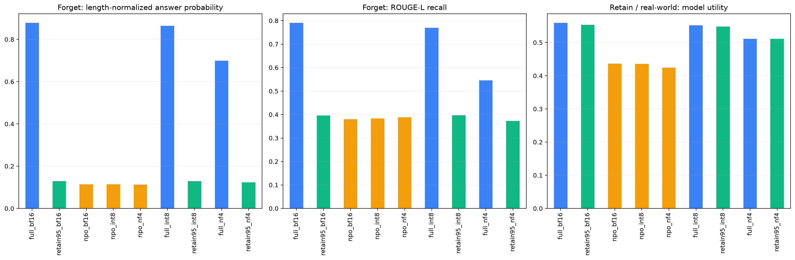

Measured local run. KS non-rejection does not prove erasure. Recovery fractions are descriptive and require pre-quantization forgetting.
| forget_answer_probability | forget_nll | forget_rougeL | forget_token_f1 | forget_exact_match | retain_rougeL | utility_arithmetic | utility_source_geometric | forget_KS_arithmetic_stat | forget_KS_arithmetic_p | forget_KS_source_stat | forget_KS_source_p | matched_precision_KS_stat | matched_precision_KS_p | |
|---|---|---|---|---|---|---|---|---|---|---|---|---|---|---|
| stage | ||||||||||||||
| full_bf16 | 0.878020 | 0.134927 | 0.790359 | 0.806654 | 0.470 | 0.785118 | 0.559091 | 0.598777 | 0.380 | 0.000000 | 0.385 | 0.000000 | 0.380 | 0.000000 |
| retain95_bf16 | 0.129694 | 2.473386 | 0.396208 | 0.436495 | 0.005 | 0.793619 | 0.553693 | 0.595582 | 0.000 | 1.000000 | 0.000 | 1.000000 | 0.000 | 1.000000 |
| npo_bf16 | 0.113933 | 2.353808 | 0.379982 | 0.283646 | 0.000 | 0.443177 | 0.436541 | 0.466029 | 0.090 | 0.393527 | 0.080 | 0.545271 | 0.090 | 0.393527 |
| npo_int8 | 0.113840 | 2.352865 | 0.382893 | 0.287232 | 0.000 | 0.445780 | 0.435681 | 0.465195 | 0.100 | 0.270474 | 0.105 | 0.220541 | 0.105 | 0.220541 |
| npo_nf4 | 0.113245 | 2.349265 | 0.388815 | 0.277975 | 0.000 | 0.433178 | 0.424316 | 0.450250 | 0.085 | 0.466286 | 0.070 | 0.712582 | 0.115 | 0.142075 |
| full_int8 | 0.864998 | 0.150427 | 0.770212 | 0.785296 | 0.390 | 0.755056 | 0.552149 | 0.590994 | 0.360 | 0.000000 | 0.370 | 0.000000 | 0.375 | 0.000000 |
| retain95_int8 | 0.129585 | 2.461101 | 0.396705 | 0.439164 | 0.000 | 0.749145 | 0.548388 | 0.590272 | 0.050 | 0.964652 | 0.030 | 0.999992 | 0.000 | 1.000000 |
| full_nf4 | 0.699686 | 0.376569 | 0.545275 | 0.580319 | 0.040 | 0.533238 | 0.511198 | 0.546359 | 0.345 | 0.000000 | 0.350 | 0.000000 | 0.365 | 0.000000 |
| retain95_nf4 | 0.123536 | 2.517959 | 0.372753 | 0.423262 | 0.005 | 0.535262 | 0.511296 | 0.548235 | 0.065 | 0.793362 | 0.055 | 0.923837 | 0.000 | 1.000000 |
| full | retain95 | npo | full_minus_npo | forgetting_toward_retain95 | baseline_separation_valid | |
|---|---|---|---|---|---|---|
| metric | ||||||
| answer_probability | 0.878020 | 0.129694 | 0.113933 | 0.764087 | 1.021062 | True |
| rouge_l_recall | 0.790359 | 0.396208 | 0.379982 | 0.410377 | 1.041166 | True |
| token_f1 | 0.806654 | 0.436495 | 0.283646 | 0.523008 | 1.412927 | True |
| exact_match | 0.470000 | 0.005000 | 0.000000 | 0.470000 | 1.010753 | True |
| npo_before | npo_after | paired_change | question_bootstrap_ci_low | question_bootstrap_ci_high | recovery_fraction | interpretation | full_quantization_change | npo_change_minus_full_change | retain95_quantization_change | npo_change_minus_retain95_change | ||
|---|---|---|---|---|---|---|---|---|---|---|---|---|
| quantization | metric | |||||||||||
| int8 | answer_probability | 0.113933 | 0.113840 | -0.000093 | -0.000642 | 0.000481 | -0.000122 | decrease after quantization | -0.013021 | 0.012928 | -0.000110 | 0.000017 |
| nf4 | answer_probability | 0.113933 | 0.113245 | -0.000689 | -0.002478 | 0.001007 | -0.000901 | decrease after quantization | -0.178334 | 0.177645 | -0.006158 | 0.005469 |
| int8 | rouge_l_recall | 0.379982 | 0.382893 | 0.002911 | -0.006967 | 0.013598 | 0.007094 | increase after quantization | -0.020148 | 0.023059 | 0.000497 | 0.002414 |
| nf4 | rouge_l_recall | 0.379982 | 0.388815 | 0.008833 | -0.003313 | 0.021656 | 0.021523 | increase after quantization | -0.245084 | 0.253916 | -0.023455 | 0.032288 |
| int8 | token_f1 | 0.283646 | 0.287232 | 0.003586 | -0.003823 | 0.011134 | 0.006857 | increase after quantization | -0.021358 | 0.024945 | 0.002669 | 0.000917 |
| nf4 | token_f1 | 0.283646 | 0.277975 | -0.005671 | -0.015551 | 0.003497 | -0.010842 | decrease after quantization | -0.226335 | 0.220664 | -0.013232 | 0.007562 |
| int8 | exact_match | 0.000000 | 0.000000 | 0.000000 | 0.000000 | 0.000000 | 0.000000 | unchanged | -0.080000 | 0.080000 | -0.005000 | 0.005000 |
| nf4 | exact_match | 0.000000 | 0.000000 | 0.000000 | 0.000000 | 0.000000 | 0.000000 | unchanged | -0.430000 | 0.430000 | 0.000000 | 0.000000 |
| utility_arithmetic | utility_source_geometric | retain_rougeL | |
|---|---|---|---|
| quantization | |||
| int8 | -0.000860 | -0.000834 | 0.002603 |
| nf4 | -0.012226 | -0.015779 | -0.009999 |
